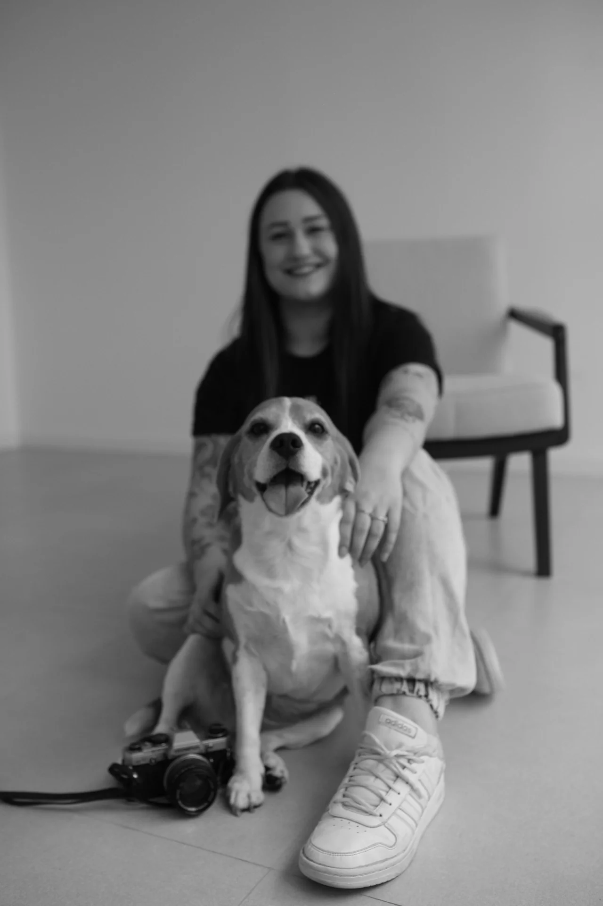

módulo 01 · aberto
Entender o terreno
O que é a internet, um dado, a nuvem, o cadeado dos sites. O chão que você já pisa todo dia.
Entrar no portal →Design thinking · automação · segurança e letramento digital
Entregar ao robô o que é do robô. Devolver ao humano o tempo de pensar.
// 8 anos olhando negócio com olho de fotógrafa.
A Trilha é gratuita e no seu ritmo. Salas curtas, uma ideia por vez, com prática no seu próprio celular.
Começar a TrilhaPra você ou pra sua empresa. Eu olho onde você está exposto, o que vale automatizar e o que precisa ser feito do zero. Você sai sabendo por onde começar.
Ver como posso ajudarTrês portais, uma ideia por vez. Cada sala concluída acende uma luz, e o progresso fica salvo no seu navegador.
0 de 9 luzes acesas
O que é a internet, um dado, a nuvem, o cadeado dos sites. O chão que você já pisa todo dia.
Entrar no portal →O que a IA faz bem, onde ela chuta, e o que você nunca devia mandar pra ela.
Senha e segundo fator, golpe no WhatsApp e no Pix, voz clonada, e o que fazer se vazou.
Nessa ordem, pra você ou pra sua empresa. Antes de qualquer ferramenta, eu olho onde você está e onde está exposto.
pra quem serve: Você Empresa
Como o trabalho anda hoje, que dados existem e em que estado.
Fechar as portas abertas antes de abrir porta nova.
Só o que vale a pena, com a ferramenta certa pro seu tamanho.
Mapa do processo, estado dos dados, onde a empresa está exposta, o que vale automatizar e o que não precisa de tecnologia nenhuma.
No seu celular: WhatsApp, Pix, contas e recuperação de senha. Na empresa: acesso de quem já saiu, backup, e-mail e roteiro anti-golpe pra equipe.
IA sem hype e golpe sem vergonha, na prática. Pra você, sua família ou sua equipe.
Atendimento que responde, agenda e passa pra você o que é complexo. Três níveis: Essencial, Com Agenda e Comercial.
Testar o bot →SDR de WhatsApp, trabalhando todos os dias. Atendimento de clínica, em piloto. Feitos com segurança desde o primeiro dia.
Quando nenhuma ferramenta pronta serve. Cada empresa funciona de um jeito, então a solução é desenhada pra ela, do processo à tela. Um exemplo: o app de laudos que fez um laudo de 100 fotos cair de 4 horas pra 40 minutos.
Automação interna, painel de métricas e atendimento em segunda língua.
// Esse é um exemplo simples para interação. A versão completa tem memória, faz gestão de tarefas, com integrações e personalização.
Tecnologia não é mágica.
Dá pra entender como funciona, onde erra e quando não precisa dela.
// design thinking aplicado, não ferramenta pela ferramenta
Mapear onde o seu tempo escorre de verdade, antes de falar de ferramenta. Às vezes a resposta nem é bot.
// diagnóstico > hypeFluxo no papel primeiro. A automação certa nasce do seu processo, não da moda do momento.
// papel e caneta ainda vencemBot funcionando de verdade, com trava de segurança em cada ponta, backup antes de cada mudança e teste depois de cada ajuste.
// backup antes, sempreMedir o tempo recuperado e ajustar. É a única métrica que importa aqui.
// tempo é a moeda
Sou a Fabiana. Alma antiga, ferramenta nova.
Tenho repertório de sobra: fotografia, dados, corporativo, tecnologia. Por muito tempo tratei cada um como caixa separada. Isso cobrou caro. Juntar tudo foi o que finalmente fez sentido.
Continuo com a câmera na mão. Aprendi cedo que quem faz a foto não é a câmera, é o olhar. É o mesmo olhar que uso pra enxergar negócio.
Não vendo mágica nem fórmula pronta. Cada empresa tem sua dor específica, e a solução nunca troca gente por máquina, só libera tempo pra pensar.
// ponte entre o mundo dos boletos e da consciência
Pós em engenharia e segurança de dados, cursos que não param, muita curiosidade em cima de tentativa e erro. Construindo meu próprio método, sozinha, num momento em que a tecnologia finalmente chegou perto de quem nunca teve acesso a ela: a micro e pequena empresa.
Ajudei a criar e manter o InPulse, movimento de inovação da empresa. Sentei com gerente de fábrica sem dashboard, diretor perdido em planilha. Fiz curso de RPA, automatizei com Power Automate, e ali virou a chave.
Negócio de dentro pra fora: comercial, cliente, fornecedor. Formada em Gestão Comercial no meio do caminho.
Larguei o conforto do que eu já sabia fazer bem pra estudar programação e dados do zero. A IA generativa chegou logo depois, e acelerou o que eu decidi aprender do jeito difícil.
Tem duas partes: a implementação, paga uma vez, e uma mensalidade que mantém o bot no ar, ajustado e evoluindo com o seu negócio. O valor muda conforme o nível, do Essencial ao Comercial. Na conversa de diagnóstico você recebe o número exato do seu caso, sem surpresa.
Projetos sob medida costumam levar de 2 a 4 semanas, do diagnóstico até o bot respondendo seus clientes. Projetos maiores, com mais integrações, podem levar mais. Você recebe prazo honesto antes de fechar.
Se o seu WhatsApp toma tempo que deveria estar em outra coisa, provavelmente sim. Os casos mais comuns: comercial que demora a responder lead, clínica ou consultório com agenda bagunçada, atendimento que repete as mesmas respostas o dia inteiro.
Eu. Tem plano de manutenção com ajuste de prompt, monitoramento e evolução do fluxo. Bot não é planta que você rega uma vez: o negócio muda, o bot acompanha.
Essa é a pergunta certa. Meus bots têm regras rígidas: não inventam preço, não prometem o que não existe e passam a conversa pra um humano quando o assunto sai do escopo. O primeiro cliente do meu SDR é ele mesmo: é assim que eu vendo.
Sem formulário de 12 campos. Uma conversa de WhatsApp, você descreve o processo, eu te digo com honestidade o que vale automatizar e o que não vale.
Chamar no WhatsApp// Vamos conversar?